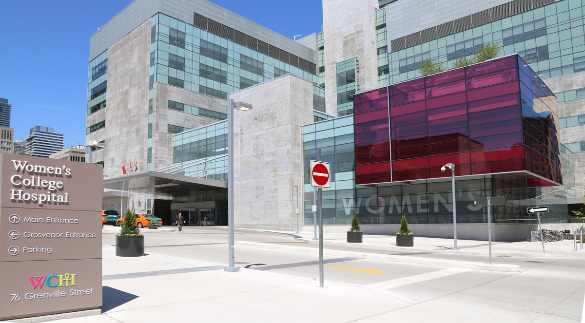

Overview
 Computer science and technology have always been a passion of mine, and one of my biggest future aspirations is to use my programming skills and technical abilities to have a positive impact on the lives of others. During the Summer 2021 semester, I worked as a Health Informatics Practicum Student at Women’s College Hospital. This position was an ideal work term for me as I had a role in a technical position that heavily focused on helping others.
In this report, I will describe my employer and some of the organization’s accomplishments, the position I worked in, what I was required to do, and I will finish off by going over my work term learning goals to overall provide an adequate summary of what I was able to accomplish during my first work term!